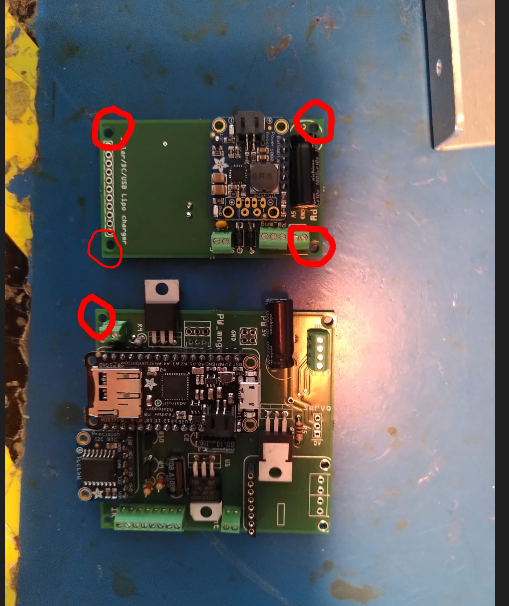

Liste des choses à faire indispensables ou de l'ordre de l'amélioration.
informatique
- Gestion du temps
-
Gestion de la milliseconde J'ai ajouté une gestion de la ms. Elle n'est pas encore parfaite car par exemple les cas 40.914s , 40.230s, 40.734s, 41.238s peuvent se produire mais la différence de temps entre les événements est correcte. elle ne sert qu'à l'enregistrement pour l'instant, elle n'est pas implémentée dans le comptage des délais.
-
Le fichier de configuration n'est pas bien lu et écrasé par la configuration en dur du code. Problème toujours présent lors de tests le 26 juillet 2022.
-
Ajout filtrage software lecture batterie Suite à un premier test d'autonomie, le système s'est arrêté (seuil fixé en dessous de 3V), alors que la tension batterie mesuré au multimètre est de 3.16V. EDIT: FONCTIONNALITE AJOUTEE. A TESTER SUR LONG TEST D AUTONOMIE
-
Mode_day_only pas utilisable pour une activation de nuit qui serait très pratique pour le suivi des hamsters. Modifier la condition
if (hours_current < config.start_time or hours_current > config.stop_time)
par une heure de démarrage et une durée (unixtime).
-
Lecture de la température ne fonctionne plus/pas avec nouveau programme/nouvelle carte?
-
mode Interruption plutôt qu'une lecture IR, pour connaitre sens passage
Electronique
-
Test réel d'autonomie Premier test réalisé avec une batterie 10Ah Li-Ion qui a permis au système d'antenne terrier de tourner pendant 5.6jours
-
Cartes Power modif à apporter :
- Une piste de la carte power doit être coupée: celle qui connecte la tension batterie au power boost. Normalement un interrupteur d'arrêt doit permettre de couper l'alimentation entre batterie et le reste du système. Or cette piste fait une connexion permanente. [EDIT: Modif déjà apportée sur fritzing le 04/08/2022]
- Position des trous: 2 sont trop proches du chargeur solaire (court circuit avec les vis), un trop proche du condensateur (court circuit) et nu trop proche du bornier à vis.

-
Mesures consommation des composants
-
Test avec panneau solaire ( et amélioration de programmation associée)
-
Protection contre la surchauffe: Avec l'aide d'un capteur de temérature, un arrêt logiciel de décharge de la batterie en cas de surchauffe a été programmé. ( A VERIFIER, TESTER). Amélioration: envisager peut être une protection électronique interne et ne pas dépendre du bon fonctionnement du logiciel ?
-
Routage d'une carte Power 12V Le schéma électronique et un premier câblage sur breadboard fonctionnel a déjà été réalisé.
Mécanique
-
Version robuste à l'extérieure A vérifier l'étanchéité du flexible de conduit au niveau des raccords.
-
Bouton poussoir à changer les BP momentanée (SW) et stable (PW) doivent être remplacés pour être compatibles avec des capuchons de protection étanches à la poussière ET à l'eau.
-
Maintien cartes élec dans valise